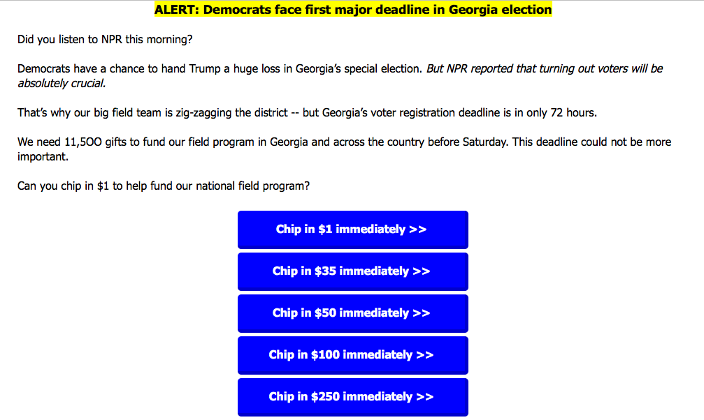
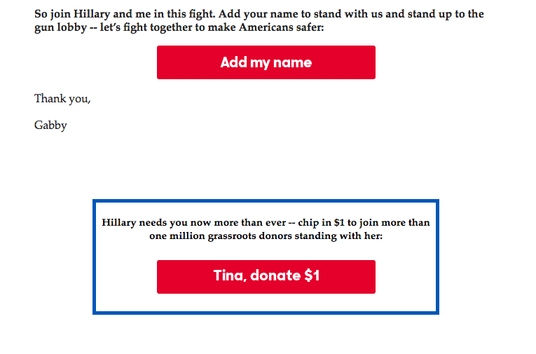

Fundraising Email: Digital Fundraising (3 of 3)
5 min read
Summary
In Digital Fundraising Part 1 and Digital Fundraising Part 2 we went over how to build an email list for a fundraising campaign in Digital Fundraising part 3 we will be going through the basics of Fundraising with Email.
Fundraising Email Basics
Fundraising with Emails is still the go-to fundraising strategy for political and issue campaigns. However, the issue is that they have to take two actions to actualize donate. The first is having them open the email and click through to the donation page, and the second is having them respond to your message. Do it right and you can expect a return on investment by as much as 3800%!
The basic design for all emails is quite simple, it should be able to be used on mobile devices, and be readable from arm’s length and able to navigate with one eye and a thumb. An easy way to look at this is that the user should be able to scroll through and understand your email even if they are hiding their phone under a desk.
1. Group Donors Based off Interests (Segment Audience)
If you aren’t reaching the right people, then your fundraising campaign will suffer, and while your email list is full of people who have expressed interest in your political or issue campaign each person was brought to our efforts for different reasons and has different needs.
That is why the first tip to having a successful email campaign is to segment your list. Here are a few basic groups you can create.
-
Desired communication frequency
-
Program interests
-
Demographics (age, gender, location)
-
Giving status (donor, prospective donor, lapsed donor, etc.)
-
Role in your organization (donor, volunteer, board member, staff)
Higher response rates are a direct result of segmentation. In fact, some marketers have found that segmented emails campaigns increase revenue by as much as 760%!
2. Email Matches to Donation Page
Make sure you match the design, visual and messaging elements of your email to your actual donation pages. But don’t stop there. If you’re being intelligent about your campaigns and sending custom asks for supporters based on their previous donation history, you need to direct them to a donation page that has that same ask amount as one of the values on the page.
3. Optimize with A/B testing
Boost your donation chances by using A/B testing to see how one email performs against another. Don’t be put off by the acronym, it’s actually a simple concept that involves creating different versions of an email and testing them to see which performs best—A or B!
For instance, you might be wondering, “Will more people open an email with the subject ‘Please donate now’ than ‘Help us reach our goal?’”
A/B testing makes it a snap to find the answer. Just fire off two different versions each to 5-10% of your email recipients, then send the better-performing version to the remaining 80-90% of your list. You can test a variety of variables such as your call to action, use of images, different donation pages, even the time and date that you send your emails. For examples, do emails sent on a Friday afternoon perform better than those sent on a Monday morning?
Trust us, no one gets it right the first time. Be prepared to track and iterate. Track open rates, click-throughs, donations, unsubscribes and other statistics. Don’t wait until your campaign is over—measure right away.
4. Copy Best Practices
-
1. Make It Personal
People are has a very strong impact, and can help your donation rate by up to 10%. Most mass email programs have this option and it is one that you should take advantage of, and A/B test different levels of formality and the use of just their first or last name.
-
First name only- Dear John…
-
First and last name- Dear John Smith…
-
Formal- Dear Mr. Smith…Dear Mr. John Smith…
-
Informal- Hi John… Hey, John…
-
-
2. Nail the Subject line
33% of email recipients decide whether they’re going to open an email based on the subject line. And, if they don’t like what they see, your audience won’t read about why they should donate.
-
Keep it Short - under 15 characters
-
Create Urgency - Give them a reason to donate now by using words like “urgent”, “now” and “important”. Obama’s campaign found that “Hey” worked well for fundraising emails.
-
-
3. Make the Call to Action Clear
Fundraising emails require a call to action so the reader knows how to give and get involved.
-
While asking for money is the most important, you should also reach out to social media and volunteers, and while asking for donations both above the fold and at the end is ok to try to avoid overwhelming them for donation and ask for other things.
-
Wrong Way

-
Right Way
